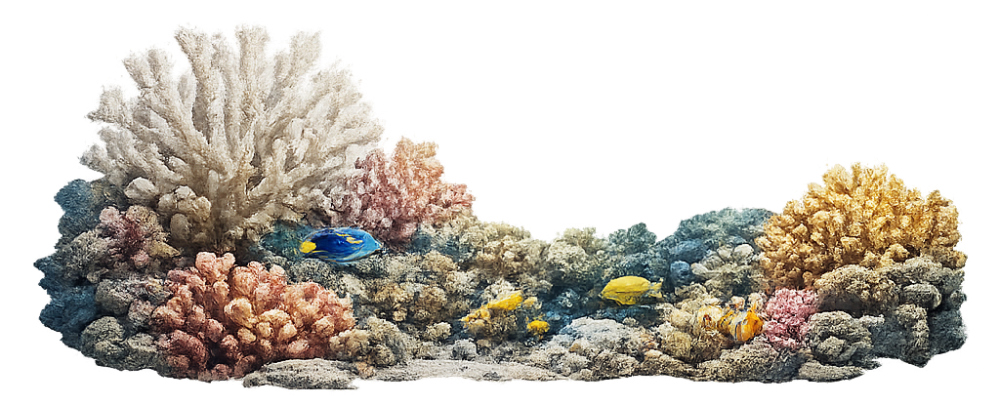
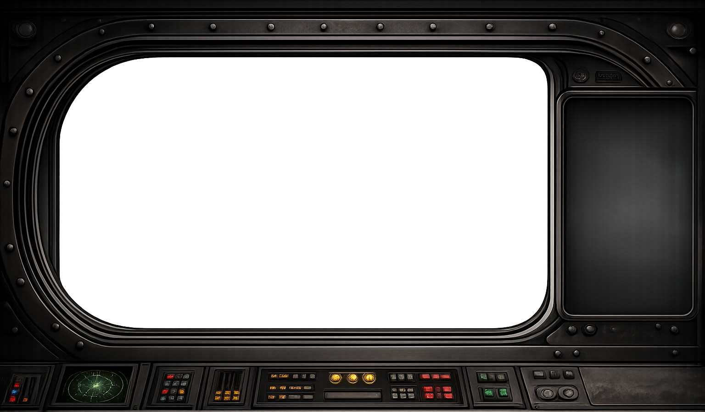
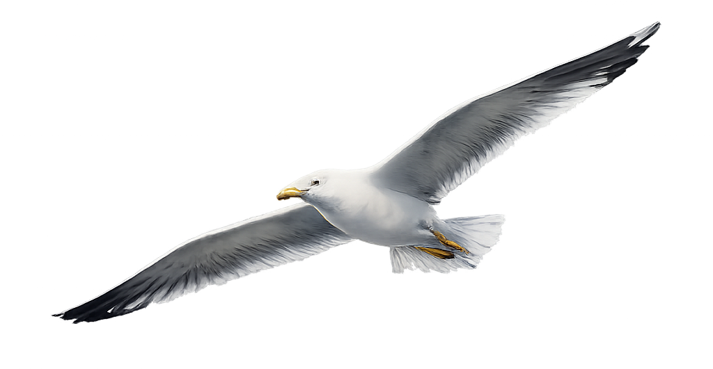
透過潛水艇的觀測窗，探索人類正在失去的深藍世界
海水溫度升高讓珊瑚將共生藻驅逐出體外。目前全球超過 50% 的珊瑚礁已遭受嚴重漂白。
你眼前的珊瑚為何逐漸失去色彩，變成死寂的白色？
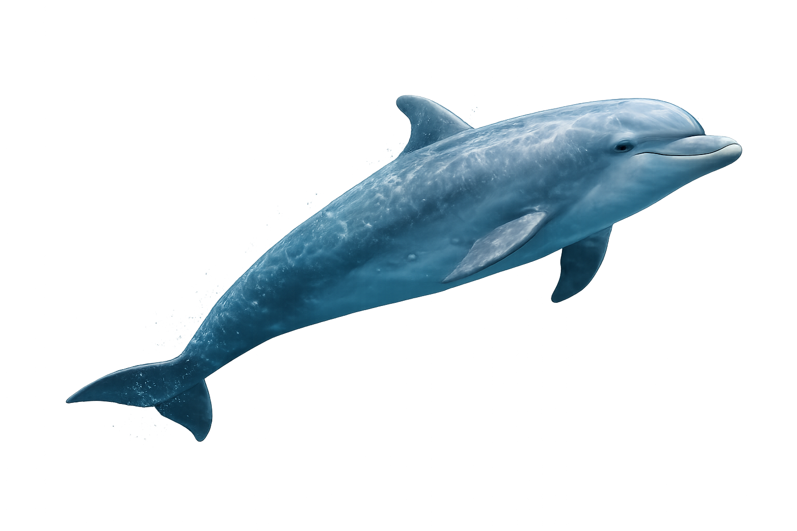
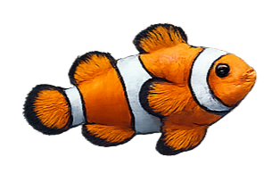
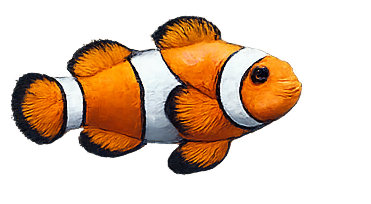
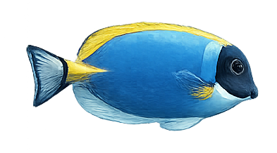
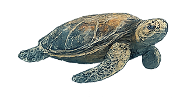
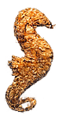
每年約 800萬噸 塑膠流入海洋。降解後的微塑膠進入食物鏈底端，最終回到人類餐桌。
漂浮在弱光層的塑膠微粒，最終會流向何處？
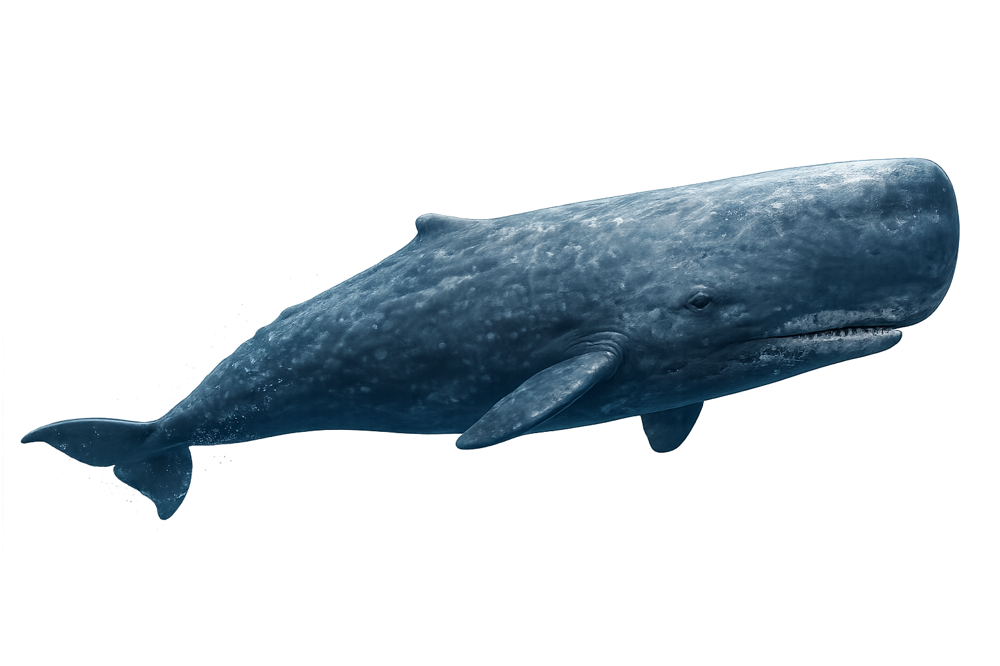
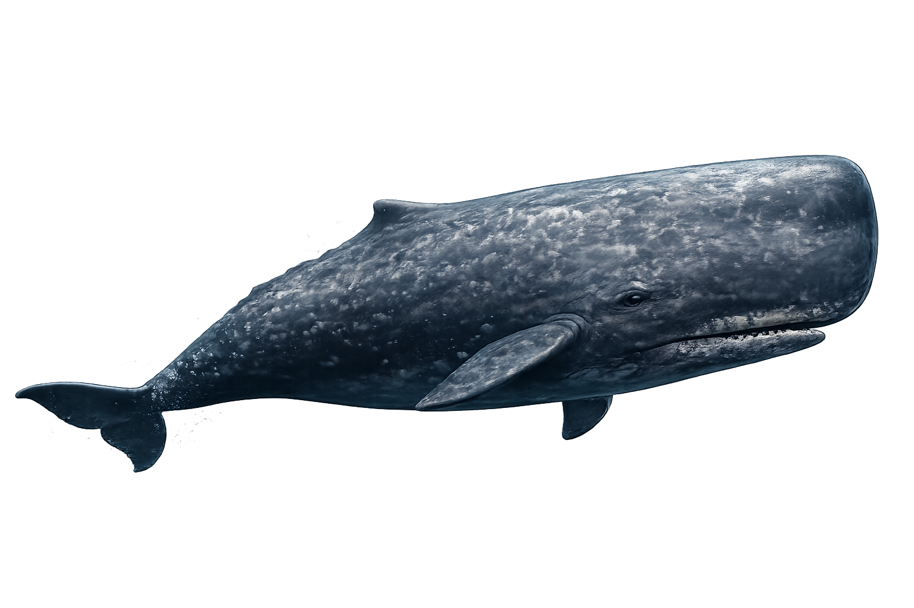
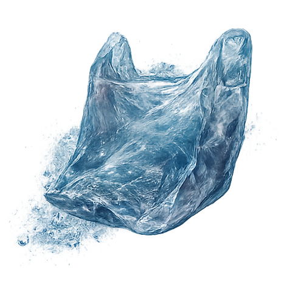
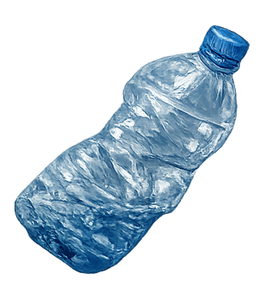
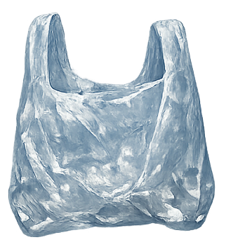
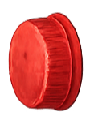
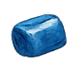
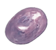
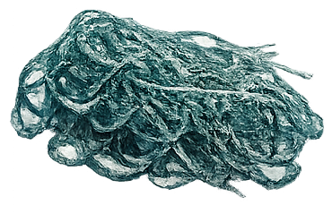
底拖網漁船用巨大鐵鏈與網具橫掃海床，一次作業即可摧毀需要數百年才能形成的深海珊瑚群落。
在這片黑暗中，什麼人類活動正在無差別摧毀海床生態？
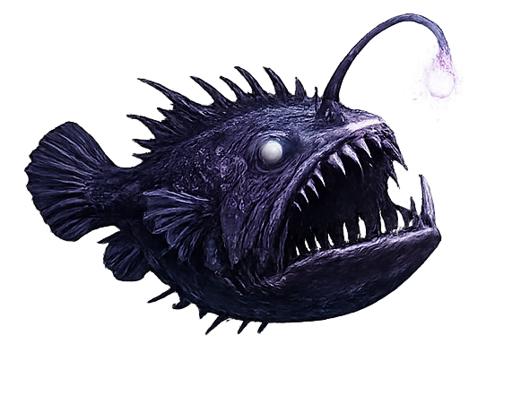
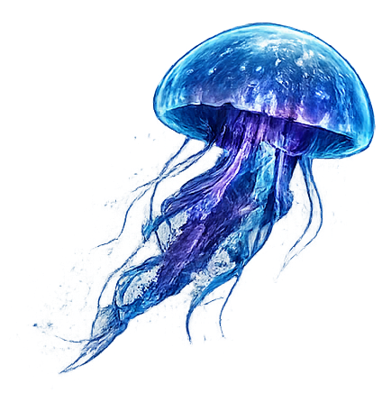